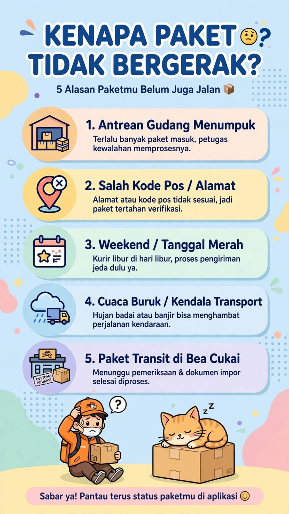

Kenapa Paket Gak Gerak? Ini Penyebab dan Cara Mengatasinya

Pernah mengalami paket sudah dikirim, tetapi ketika nomor resi dicek, statusnya tidak berubah selama berjam-jam atau bahkan beberapa hari? Situasi seperti ini sering membuat pengirim dan penerima bertanya-tanya: kenapa paket gak gerak, apakah paket tersangkut, atau jangan-jangan paket hilang?
Jangan langsung panik. Status pelacakan yang belum berubah tidak selalu berarti paket berhenti bergerak secara fisik. Ada beberapa kemungkinan yang perlu diperiksa sebelum mengambil tindakan lebih lanjut.
📦 Bingung dengan Status Pengiriman Paket?
Jika ingin bertanya seputar pengiriman atau layanan ekspedisi, silakan hubungi Lion Parcel Bandung POS101. Siapkan nomor resi jika ingin menanyakan kiriman tertentu.
💬 Chat WhatsApp 0851-8309-04861. Kenapa Paket Gak Gerak Saat Dicek Resi?
Ada beberapa penyebab mengapa status pengiriman tidak segera diperbarui. Penyebab pastinya bergantung pada posisi paket, jenis layanan, rute pengiriman, dan informasi yang tersedia pada sistem pelacakan.
A. Paket Belum Mendapat Pembaruan Pemindaian
Perjalanan paket biasanya melibatkan beberapa proses pemindaian, misalnya saat diterima, diproses di fasilitas sortir, atau diteruskan ke lokasi berikutnya. Jika belum ada pemindaian baru, status di halaman pelacakan mungkin masih menampilkan informasi lama.
Jadi, paket bisa saja sedang dalam proses penanganan atau perjalanan, tetapi informasi terbarunya belum muncul pada sistem. Meski demikian, hal ini perlu dibedakan dari keterlambatan yang memang membutuhkan pemeriksaan lebih lanjut.
B. Paket Sedang Diproses di Gudang atau Pusat Sortir
Sebelum melanjutkan perjalanan, paket dapat melewati proses sortir berdasarkan tujuan pengiriman. Ketika volume kiriman sedang tinggi, proses penanganan dapat membutuhkan waktu lebih lama dari biasanya.
Kondisi ini mungkin terjadi saat periode belanja online besar, menjelang hari raya, atau ketika banyak kiriman masuk secara bersamaan. Namun, tidak semua paket yang statusnya diam sedang berada di gudang. Posisi sebenarnya perlu dikonfirmasi melalui informasi pelacakan atau petugas layanan terkait.
C. Paket Sedang Berpindah Antarfasilitas
Dalam perjalanan ke kota tujuan, paket bisa melewati beberapa titik transit. Pembaruan status tidak selalu muncul setiap kali kendaraan berangkat atau tiba di suatu lokasi.
Karena itu, tidak adanya perubahan status dalam waktu singkat belum cukup untuk menyimpulkan bahwa paket hilang atau tertahan.
D. Ada Kendala Operasional atau Transportasi
Cuaca buruk, gangguan transportasi, kepadatan jalur distribusi, atau kendala operasional tertentu bisa memengaruhi waktu pengiriman. Jika terjadi keterlambatan, perkiraan waktu tiba dapat berubah.
E. Informasi Resi Belum Tersinkronisasi
Dalam kondisi tertentu, data pelacakan dapat membutuhkan waktu untuk diperbarui. Periksa kembali nomor resi yang dimasukkan dan pastikan Anda menggunakan kanal pelacakan resmi dari perusahaan ekspedisi yang menangani kiriman.
📍 Lion Parcel Bandung POS101 Nanjungmekar
Untuk pertanyaan umum mengenai layanan pengiriman, Anda dapat menghubungi agen Lion Parcel Bandung POS101 di Nanjungmekar, Rancaekek, Kabupaten Bandung.
Alamat: Jl. Raya Barat Cicalengka RT 1 RW 1, Nanjung Mekar, Rancaekek, Kabupaten Bandung, Jawa Barat.
2. Berapa Lama Status Paket Wajar Tidak Berubah?
Tidak ada satu durasi yang berlaku untuk semua kiriman. Lama pembaruan status bergantung pada proses pengiriman, rute, jenis layanan, waktu pemindaian, serta kondisi operasional.
Jika status belum berubah selama beberapa jam, Anda dapat memeriksa kembali secara berkala. Jika sudah berlangsung lebih lama dari perkiraan pengiriman, atau melewati estimasi yang diinformasikan oleh penyedia jasa, sebaiknya mulai meminta penjelasan.
Jangan hanya berpatokan pada lamanya status tidak berubah. Perhatikan juga status terakhir, tanggal pembaruan, estimasi pengiriman, serta pemberitahuan resmi dari pihak ekspedisi.
3. Apa yang Harus Dilakukan Jika Paket Tidak Bergerak?
- Periksa nomor resi. Pastikan tidak ada angka atau karakter yang salah saat memasukkan nomor pelacakan.
- Cek melalui kanal resmi. Gunakan situs atau aplikasi resmi perusahaan ekspedisi yang menangani kiriman Anda.
- Lihat status terakhir dan tanggalnya. Catat informasi terakhir yang muncul agar mudah menjelaskan masalah ketika menghubungi layanan pelanggan.
- Periksa estimasi waktu pengiriman. Bandingkan dengan perkiraan yang diberikan saat paket dikirim, dengan mempertimbangkan kemungkinan kendala operasional.
- Hubungi layanan pelanggan jika diperlukan. Sampaikan nomor resi, status terakhir, dan sejak kapan tidak ada pembaruan. Mintalah pemeriksaan lebih lanjut jika kiriman diduga mengalami keterlambatan.
- Simpan bukti pengiriman. Simpan resi, bukti transaksi, dan percakapan terkait sampai paket diterima atau masalah selesai.
Hindari membagikan nomor telepon, alamat lengkap penerima, atau informasi pribadi lainnya secara terbuka di media sosial ketika meminta bantuan mengenai kiriman.
4. Kapan Harus Mengajukan Keluhan Paket?
Anda sebaiknya meminta pemeriksaan apabila paket sudah melewati estimasi pengiriman, status tidak berubah dalam waktu yang mengkhawatirkan, muncul keterangan kendala, atau penerima belum menerima paket meskipun status menyatakan sudah terkirim.
Sampaikan kronologi secara singkat dan jelas. Pihak ekspedisi dapat memerlukan waktu untuk memeriksa catatan perjalanan paket dan mengonfirmasi kondisi terakhirnya. Ikuti petunjuk serta prosedur pengaduan resmi yang berlaku.
Perlu diingat, status yang tidak berubah saja belum membuktikan paket hilang. Sebaliknya, jangan mengabaikan masalah jika keterlambatan sudah melewati estimasi atau terdapat informasi yang tidak sesuai.
5. Apakah Paket yang Tidak Bergerak Pasti Hilang?
Tidak. Status pelacakan yang tidak berubah bukan bukti pasti bahwa paket hilang. Ada kemungkinan data belum diperbarui, paket sedang diproses, atau perjalanan mengalami kendala.
Cara terbaik untuk mengetahui kondisinya adalah memeriksa informasi resmi dan menghubungi layanan pelanggan apabila pembaruan tak kunjung muncul. Jangan membuat kesimpulan hanya berdasarkan satu status pelacakan.
6. Tips agar Pengiriman Lebih Mudah Dipantau
- Simpan nomor resi setelah paket diserahkan kepada ekspedisi.
- Pastikan nama, alamat, kode pos, dan nomor telepon penerima benar.
- Periksa estimasi pengiriman sebelum memilih layanan.
- Gunakan kanal pelacakan resmi untuk melihat perkembangan kiriman.
- Simpan bukti transaksi dan komunikasi jika sewaktu-waktu diperlukan.
- Segera tanyakan kepada penyedia jasa jika muncul kendala atau keterlambatan yang tidak biasa.
Butuh Informasi Seputar Pengiriman?
Lion Parcel Bandung POS101 melayani pertanyaan seputar layanan pengiriman. Untuk kiriman yang sedang berjalan, siapkan nomor resi dan sampaikan kendala yang Anda alami agar pertanyaan lebih mudah ditindaklanjuti.
💬 Hubungi WhatsApp 0851-8309-0486Kesimpulan
Kenapa paket gak gerak? Penyebabnya bisa berupa belum adanya pemindaian terbaru, proses sortir, perjalanan antarfasilitas, kendala operasional, atau keterlambatan pembaruan data pelacakan. Kondisi sebenarnya tidak bisa dipastikan hanya dari status yang belum berubah.
Periksa nomor resi melalui kanal resmi, perhatikan estimasi pengiriman, dan hubungi layanan pelanggan apabila keterlambatan berlanjut atau muncul kendala. Simpan bukti pengiriman agar proses pemeriksaan lebih mudah.
Nama Agen: Lion Parcel Bandung POS101 Nanjungmekar Rancaekek
Jam Operasional: Senin–Minggu, 08.00–20.00 WIB
Alamat: Jl. Raya Barat Cicalengka RT 1 RW 1, Nanjung Mekar, Rancaekek, Kabupaten Bandung
WhatsApp: 0851-8309-0486